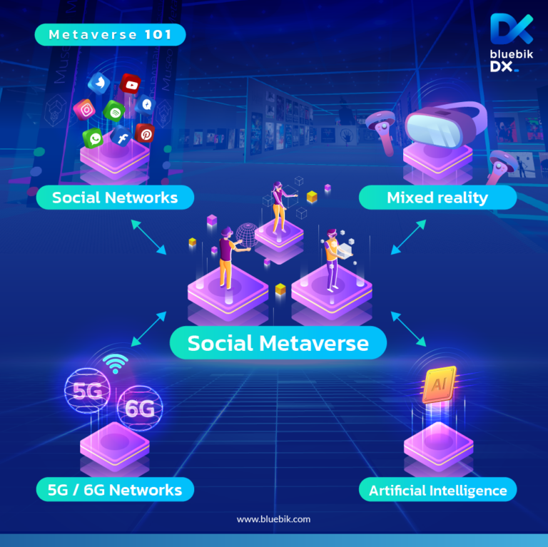

เทคโนโลยีรากฐานของ Metaverse นั้นประกอบไปด้วย เทคโนโลยีปัญญาประดิษฐ์ (AI), กาารจัดการความสม่ำเสมอของพื้นที่และเวลา, ความปลอดภัยและความเป็นส่วนตัว โดยมีรายละเอียดในส่วนต่างๆ ดังนี้
อัลกอริทึมของ AI (เช่น machine learning, deep learning, reinforcement learning เป็นต้น) เป็นกุญแจหลักที่จะเชื่อมต่อโลกเสมือนและโลกแห่งความจริงเข้าด้วยกัน มีองค์ประกอบสำคัญคือ ข้อมูล, อัลกอริทึม และพลังการประมวลผล การใช้เทคโนโลยีปัญญาประดิษฐ์นั้นจะช่วยให้ Metaverse สามารถมีส่วนร่วมกับสังคมและเศรษฐกิจได้อย่างมีอิสระและปลอดภัย โดยไม่มีข้อจำกัดจากโลกแห่งความจริง ด้วยการนำเทคโนโลยีหลายอย่างมาประกอบกัน ผู้ใช้งานจะสามารถได้รับประสบการณ์ผ่านภาพและเสียงไม่ต่างกับที่ได้รับจากโลกแห่งความจริง
การจัดการความสม่ำเสมอด้านพื้นที่และเวลา กล่าวคือ ในรูปแบบที่ Metaverse มุ่งหวังจะเป็นนั้นคือโลกคู่ขนานดิจิทัลที่ควบคู่ไปกับสังคมบนโลกแห่งความจริง ดังนั้นความรู้สึกในความสอดคล้องของพื้นที่และเวลาจึงจำเป็นอย่างยิ่งเพื่อที่จะสามารถสร้างการปฎิสัมพันธ์ระหว่างโลกแห่งความจริงและ Metaverse ได้อย่างสอดคล้องกันมากที่สุด
ประเด็นความปลอดภัยและความเป็นส่วนตัวนั้น เป็นอีกหนึ่งปัญหาใหญ่ในโลกแห่งความจริง และด้วยการมาถึงของ Metaverse จะเกิดการเก็บและใช้งานข้อมูลส่วนตัวจำนวนมหาศาลแบบที่ไม่เคยเกิดขึ้นมาก่อน ซึ่งในอนาคตมีความเป็นได้มากว่าจะมีบริษัทหรือสถาบันมากมายที่ต้องการสร้าง Metaverse ขึ้น โดยประเด็นที่ตามมาคือ จะมีวิธีใดในการใช้งานข้อมูลร่วมกันระหว่างบริษัทหรือสถาบันเหล่านี้ โดยที่การปฎิสัมพันธ์กันของข้อมูลต่าง Metaverse เหล่านี้จะต้องยังคงมีความปลอดภัยและความเป็นส่วนตัวอยู่
นายจรณินทร์ น้อยวิบล ปวส.2/1 เลขที่ 8